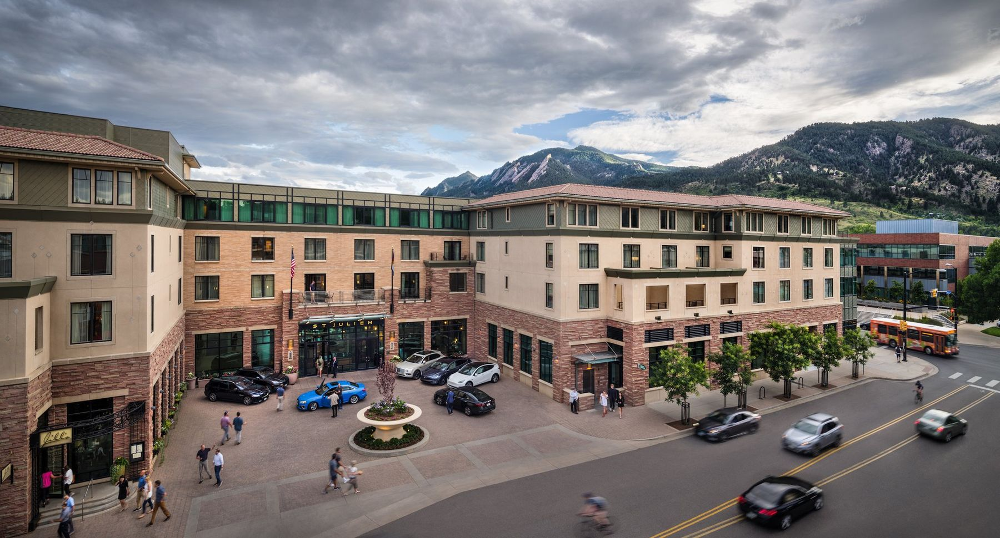

90s and 2000s R&B and hip-hop
Little Moses Jones
- WinnerWedding Band of the Year, ColoradoLUXlife Global Wedding Awards, 2022
- NomineeFour nominations for the album Legendary and the song Walk This Road AloneHollywood Music Awards, 2014
You know what happens at a party when the first bars of Regulate come on and everyone starts singing along. Little Moses Jones is a six-piece band that keeps that feeling going all night, with the 90s and 2000s R&B and hip-hop your guests grew up on and the verses rapped live.
We’ll work with you on the songs, and even on what the band wears. Here’s how booking through Signet works.
Awards and press
- WinnerWedding Band of the Year, ColoradoLUXlife Global Wedding Awards, 2022
- NomineeFour nominations for the album Legendary and the song Walk This Road AloneHollywood Music Awards, 2014
In the press and on air

TV · Colorado & Company, 9NEWS · 2025
Played their song The Rain Came Falling Down live
- X103.9
Radio
On air
- VoyageDenver
Press
Interview
Stages and credits
- Denver Broncos pregame and pep rally, and the Colorado Rockies
- Corporate events for Google and Pearson, galas for the Boys & Girls Club, the Denver Children's Foundation and Big Dawgs Huge Paws, and Children's Hospital Colorado's block party
- Featured performer at Juneteenth in Thornton (2025)
- The Anschutz Block Party at the CU Anschutz Medical Campus
- A Taste of Colorado, the Denver Polo Classic, Parker Days, Burro Days, the Cherry Creek Arts Festival, Aurora's 4th of July and the Breckenridge Beer Fest
- More than 500 shows in over 20 states and countries, including Amsterdam and Mexico
- Shared the stage with Grammy winner Chrisette Michele
- Recorded with musicians from Gladys Knight's band, Earth, Wind & Fire and Dotsero, and with Lionel Young on Walk This Road Alone
- Their album Legendary went to No. 1 on the Latin Jazz, R&B, Funk & Blues charts
Trusted and booked by
Little Moses Jones has two singers up front, and behind them the bandleader plays keys and horns alongside guitar, bass and drums. They play straight through with no gaps between the songs, which helps keep your guests dancing.
The band can play a clean show for an office party or a gala and the full lyrics for a late-night party. Just let us know which you’d like when you send the date.
The band has been playing live for nearly two decades. It has played for Google, Pearson and a Denver Broncos pregame, galas for the Boys and Girls Club and the Denver Children's Foundation, festival stages at Parker Days, Burro Days and Juneteenth in Thornton, and dates in Amsterdam and Mexico. In 2022 the LUXlife awards named it Colorado's wedding band of the year.
The band brings its own sound engineer, so you usually won’t need a separate audio company.
Occasions
Perfect booking for
- Office holiday parties
- People from every department tend to know these songs, so you won’t have to talk anyone into dancing, whether you’re at a downtown Denver venue or your own office.
- Conference after-parties and galas
- Once the program is over, this is the band to book when you want everyone letting loose.
- Milestone birthdays
- If your friends were in high school when these songs were on the radio, this is the band you want for a big birthday at a venue with space to dance.
- Wedding receptions
- This is a great choice if you want people dancing from the first song.
We’ll plan the music around your speeches and program, so let us know the flow of the evening. Wondering about prices? Our Live Music Cost Guide covers what live music costs across Colorado.
Song list
A sample of their songs.
Want to hear them live? You can watch the band play every one of these songs in our video clips.
- Doo Wop (That Thing)Lauryn Hill
- Gin and JuiceSnoop Dogg
- RegulateWarren G and Nate Dogg
- I Got 5 On ItLuniz
- Forgot About DreDr. Dre and Eminem
- So Fresh, So CleanOutkast
- Get Ur Freak OnMissy Elliott
- The Rain Came Falling DownLittle Moses Jones
Beyond these, they play songs by Usher, TLC, Destiny’s Child, Mary J. Blige, Nelly and Montell Jordan, along with the soul and funk songs that inspired them. They can also play their original songs at your event if you ask.
Video Clips
Watch Little Moses Jones live
These clips include a corporate event, seven covers from Snoop Dogg to Lauryn Hill, an original song played live on 9NEWS and the main stage at Parker Days.


What clients say
“You and your high energy wedding band absolutely killed it on our special day! … We are still getting great feedback from our guests about what an amazing job the band did and how much fun you guys are to just watch play, let alone dance the night away with!”
Venues
We’d pick Little Moses Jones for live music at these venues.

Downtown Denver
Hyatt Centric Downtown Denver
A rooftop bar and patio, a cozy lobby and the Colorado Ballroom.
Played hereTejas Singh
Live music at Hyatt Centric Downtown Denver
Colorado Springs
Cheyenne Mountain Resort
The Centennial, Colorado and Remingtons ballrooms and the beach on the resort’s private lake.
Acts we'd pickClassical Strings · Tejas Singh · Little Moses Jones
Live music at Cheyenne Mountain Resort
Downtown Denver
Four Seasons Hotel Denver
The Grand Ballroom, the Cottonwood Ballroom and the third-floor Pool Terrace.
Acts we'd pickLittle Moses Jones · Tejas Singh · Dirty Flamenco
Live music at Four Seasons Hotel Denver
Colorado Springs, above Garden of the Gods
Garden of the Gods Resort and Club
The Three Graces Ballroom and Terrace, the View at Kissing Camels, the Garden Room, the Hill Room and the Reflection Pool.
Acts we'd pickClassical Strings · Tejas Singh · Meghan Clarisse
Live music at Garden of the Gods Resort
Aurora, by Denver International Airport
Gaylord Rockies Resort & Convention Center
Four ballrooms, the Mountain View Pavilion and its lawns, the Grand Lodge and the Front Range Lawn.
Acts we'd pickTejas Singh · Little Moses Jones · Quadrasonic
Live music at Gaylord Rockies
Downtown Denver
Grand Hyatt Denver
The Pinnacle Club on the 38th floor, the Colorado Ballroom and the Aspen Ballroom.
Acts we'd pickJazz Duo · Little Moses Jones · Quadrasonic
Live music at Grand Hyatt Denver
Downtown Denver
Hilton Denver City Center
The Colorado, Denver and Penrose ballrooms and an outdoor plaza.
Acts we'd pickLittle Moses Jones · Soul and R&B Band · Jazz Duo
Live music at Hilton Denver City Center
Downtown Denver, at the Colorado Convention Center
Hyatt Regency Denver at Colorado Convention Center
The Centennial Ballroom, the Capitol Ballroom, the Denver City Terrace and the Silver Room.
Acts we'd pickClassical Strings · Little Moses Jones · Soul and R&B Band
Live music at Hyatt Regency Denver
Broomfield, between Denver and Boulder
Omni Interlocken Hotel
The Interlocken and Centennial ballrooms, Ponderosa, the Outdoor Pavilion and the ceremony lawn.
Acts we'd pickClassical Strings · Dirty Flamenco · Little Moses Jones
Live music at Omni Interlocken
Downtown Boulder
St Julien Hotel & Spa
The Xanadu Ballroom, the lawn, the Redgarden terraces and Jill’s, with views of the Flatirons.
Acts we'd pickClassical Strings · Tejas Singh · René Moffatt
Live music at St Julien Hotel & Spa
Colorado Springs, at the foot of Cheyenne Mountain
The Broadmoor
The Main Ballroom, the Lake Terrace and Lakeside Terrace, Broadmoor Hall, the International Center and Cheyenne Lodge.
Acts we'd pickClassical Strings · Jazz Duo · Dirty Flamenco
Live music at the Broadmoor
Downtown Denver
The Brown Palace Hotel and Spa
The Grand Ballroom, the Onyx Room, Central City, the Brown Palace Club and the atrium lobby.
Acts we'd pickTejas Singh · Jazz Duo · Dirty Flamenco
Live music at the Brown Palace
Westminster, between Denver and Boulder
The Westin Westminster
The Westminster, Legacy and Standley ballrooms, the Waterfall Gardens, the Lake House and the Sunset Rooftop Deck.
Acts we'd pickClassical Strings · Little Moses Jones · Quadrasonic
Live music at the Westin Westminster
Little Moses Jones questions
Still have questions? Take a look at our full question list.
How long does the band play?
Will they learn our first dance?
Do they play outside Denver?

Looking for a 90s hip-hop and R&B band in Denver?
Send us your date and we’ll check with the band.
Want photos or video of your event? Add them to your booking.